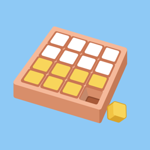
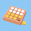

媽媽記副食品
記錄寶寶的副食品：每次吃了什麼、吃多少、有沒有過敏狀況、寶寶喜不喜歡， 並整理成月曆、統計與簡單的判斷結果。
你的資料只在你手上
- 寶寶的名稱、紀錄與照片只存在你的手機，或你自己的 Google 雲端硬碟（開啟雲端功能時）。
- 匯出檔整份加密，只能用匯出時的 Google 帳號匯入；我們拿不到金鑰。
- 沒有廣告，也沒有任何分析工具。
本 App 僅供記錄與參考，非基於醫學知識做的判斷。寶寶有任何反應，請諮詢醫師。

媽媽記副食品 管理後台
記錄寶寶的副食品：每次吃了什麼、吃多少、有沒有過敏狀況、寶寶喜不喜歡， 並整理成月曆、統計與簡單的判斷結果。
本 App 僅供記錄與參考，非基於醫學知識做的判斷。寶寶有任何反應，請諮詢醫師。